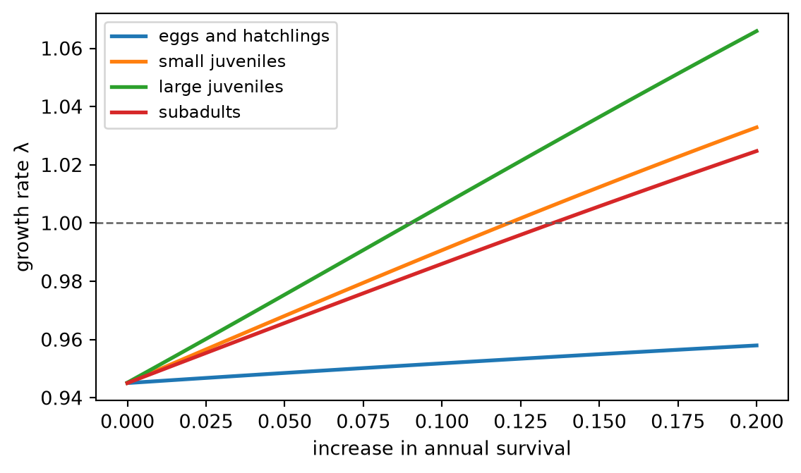

Show the code for this figure
import numpy as np
import matplotlib.pyplot as plt
A = np.array([[0, 0, 0, 0, 127, 4, 80],
[0.6747, 0.7370, 0, 0, 0, 0, 0],
[0, 0.0486, 0.6610, 0, 0, 0, 0],
[0, 0, 0.0147, 0.6907, 0, 0, 0],
[0, 0, 0, 0.0518, 0, 0, 0],
[0, 0, 0, 0, 0.8091, 0, 0],
[0, 0, 0, 0, 0, 0.8091, 0.8089]])
lam = lambda M: max(np.linalg.eigvals(M).real)
def stage(s, D):
"""Probabilities of staying (P) and growing (G) for annual survival s over D years."""
return s * (1 - s**(D - 1)) / (1 - s**D), s**D * (1 - s) / (1 - s**D)
increase = np.linspace(0, 0.2, 41)
fig, ax = plt.subplots(figsize=(6, 3.6))
values = []
for dx in increase:
B = A.copy()
B[1, 0] = 0.6747 + dx # first-year survival of eggs and hatchlings
values.append(lam(B))
ax.plot(increase, values, label="eggs and hatchlings", lw=2)
for col, s0, D, name in [(1, 0.7857, 7, "small juveniles"), (2, 0.6758, 8, "large juveniles"),
(3, 0.7425, 6, "subadults")]:
values = []
for dx in increase:
B = A.copy()
B[col, col], B[col + 1, col] = stage(s0 + dx, D)
values.append(lam(B))
ax.plot(increase, values, label=name, lw=2)
ax.axhline(1, color="0.4", ls="--", lw=1)
ax.set_xlabel("increase in annual survival")
ax.set_ylabel("growth rate λ")
ax.legend(fontsize=9)
plt.tight_layout()
plt.show()